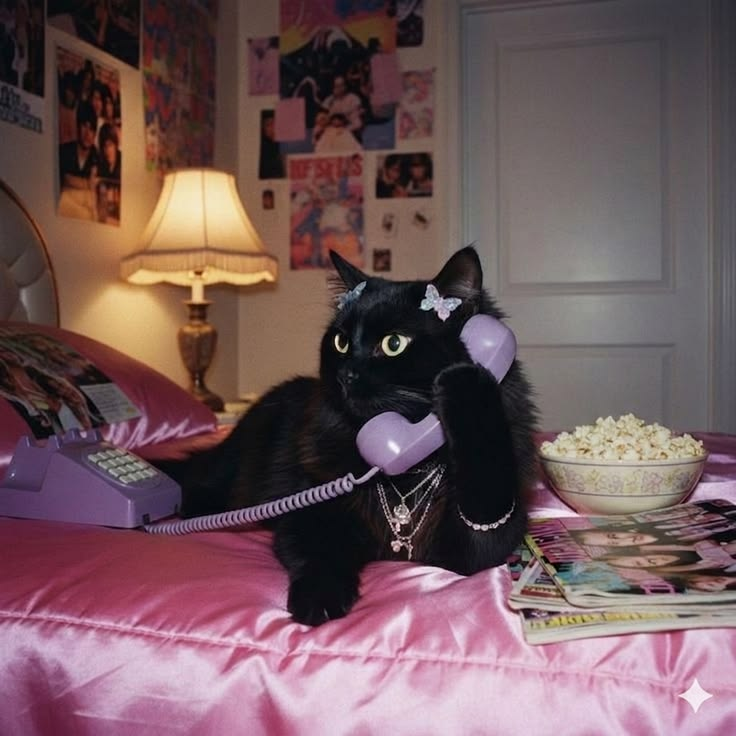

Мода
Я обожаю бантики, бабочки и, конечно, жемчужные ожерелья. Мой гардероб насчитывает более 20 нарядов.
Главные правила стиля от Беллы:
- розовый подходит ко всему;
- аксессуаров много не бывает;
- ошейник должен сочетаться с настроением.
личный блог одной очень модной кошки
Жизнь модной кошки — это не только сон на подоконнике. У меня четыре главных увлечения, и каждому я отдаюсь целиком.
Я обожаю бантики, бабочки и, конечно, жемчужные ожерелья. Мой гардероб насчитывает более 20 нарядов.
Главные правила стиля от Беллы:

Я знаю, как работать с камерой. Мой лучший ракурс — взгляд через плечо с лёгким прищуром.
Хозяйка снимает меня почти каждый день, а самые удачные кадры попадают в фотогалерею ниже.

Я гурман. Предпочитаю только свежий корм премиум-класса и иногда (тсс!) сливки.
Миску проверяю дважды: сначала нюхаю, потом смотрю на хозяйку. Если корм вчерашний, она всё поймёт по взгляду.

Я сплю по 16 часов в сутки. Красота требует жертв, а отдых — лучшая инвестиция в моё сияние.
Любимые места для сна: хозяйская подушка, корзина для белья и солнечное пятно на ковре.
Нажмите на любую фотографию, чтобы открыть её в полном размере.